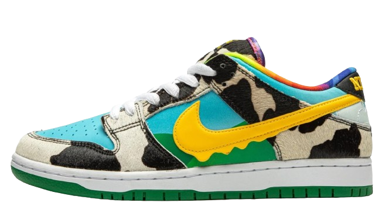

Nike

Ben & Jerry's x Nike
Excelente para colecionadores
O tênis Ben & Jerry da Nike é uma colaboração inovadora que combina a moda esportiva com um toque irreverente e divertido. Este modelo faz parte de uma série especial que celebra o icônico estilo da famosa marca de sorvetes. Além do visual marcante, o tênis mantém o desempenho e o conforto típicos dos produtos Nike.
R$8,000